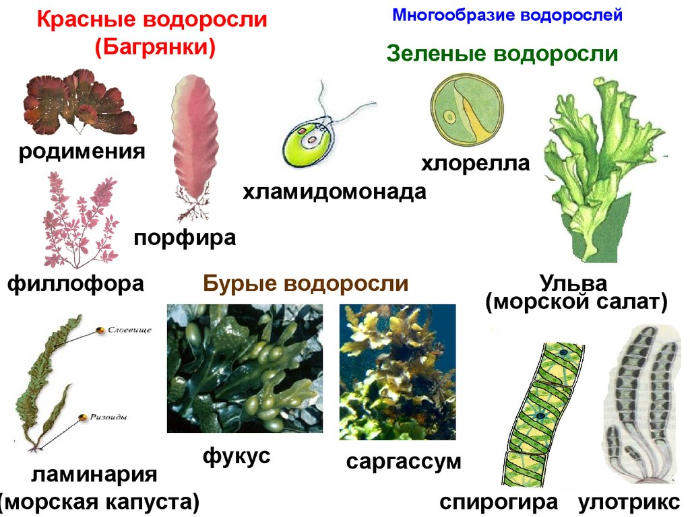

Эрозия шейки маткиЭто потеря эпителия слизистой оболочкой. Если имеется слущивание эпителия в результате патологических выделений из шеечного канала, такую эрозию называют истинной. Чаще же бывает замещение эпителия, характерного для влагалища цилиндрическим, нехарактерным для него, называемое ложной эрозией. Возникновению способствуют выворот слизистой оболочки, разрывы шейки в родах и при абортах. Дефект эпителия (истинная эрозия) имеет ярко красный цвет, кровоточит при прикосновении, но ничем больше себя не проявляет и обнаруживается обычно только при гинекологическом осмотре. При ложной эрозии поверхность более бледная, иногда бархатистая, сосочковая.
При лечении средствами народной медицины важная роль отводится водорослям.
Рекомендуется раствор фитолона взрослым по 25–30 капель на 1/4 стакана воды 2–3 раза в день во время еды. Для профилактики используется фитолон по 25 капель 2 раза в день. А также эффективен такой препарат альгиновой кислоты, как альгинат натрия или кальция в виде геля по 2–4 г в день, местно.
Внутрь полезно употреблять и сухой порошок ламинарии или фукуса по 1 ч. л. 1–2 раза в день, запивая стаканом воды.
Предменструальный синдромРасстройство функций нервной, сердечно-сосудистой и эндокринной систем во второй половине менструального цикла известно многим женщинам. За 7–10 дней до начала менструации появляются головная боль, бессонница, депрессия, раздражительность, снижается работоспособность, увеличивается масса тела. Иногда наблюдаются тахикардия, сердечные аритмии, боли в области сердца, удушье, незначительное повышение температуры. С началом менструации все симптомы идут на убыль.
В этом случае народные средства как раз и оказываются самыми эффективными. Попробуйте применять раствор фитолона при уже разыгравшихся симптомах предменструального синдрома взрослым по 25–30 капель на 1/4 стакана воды 2–3 раза в день во время еды. Для профилактики используется фитолон по 25 капель 2 раза в день. А также эффективен такой препарат альгиновой кислоты, как альгинат натрия или кальция по 1–2 г в день, запивая стаканом воды.
Климактерический периодФизиологический переход организма от половой зрелости к прекращению генеративной (менструальной и гормональной) функции яичников. У большинства женщин климактерический период проходит без выраженных расстройств. Подчас его течение осложняется, что выражается некоторой возбудимостью, нарушениями сна, головокружениями, повышением артериального давления, приливами жара к лицу, верхней половине туловища, учащении сердцебиении, утомляемостью т. д. Около 10 % женщин переносят климакс патологически; приливы очень частые, резко повышается АД, может быть нарушение обменных процессов в организме, психические расстройства. Климакс сопровождается дисфункциональными маточными кровотечениями.
Специфическое лечение (в основном гормонозаместительная терапия) назначается только при выраженных проявлениях. Если же вы хотите немного облегчить себе существование, не прибегая к гормональной терапии, попробуйте разнообразить свой рацион блюдами из ламинарии (морской капусты) или фукуса, ешьте их хотя бы 1 раз в день.
Существует также специализированный препарат «Беталам», содержащий в себе концентрат морской капусты и бета-каротина. Его применяют при любых симптомах климакса по 1 капсуле 1–3 раз в день во время еды. Курс приема 1,5–3 месяца, перерыв между курсами 1–2 недели.
Аэрофитотерапия будет очень полезна. Ее можно проводить индивидуально (индивидуальный ингалятор и аэрофитогенератор) или в специальном лечебном кабинете (альгакамера, галокамера, аэрофитогенераторы).
Для проведения аэрофитотерапии чаще всего используются эфирные масла (эвкалиптовое, лавандовое, шалфейное и др.), в том числе и водорослевые (масло фукуса). Аэрофитотерапию можно проводить с помощью индивидуального ингалятора, используя настой из морских водорослей (необходимо взять по 1 ч. л. ламинарии и фу куса, заварить в 250 мл кипятка, настаивать в течение 15 мин, а затем процедить). В настой можно добавить 2–3 капли ароматического масла наземных растений.
При лечении в альгакамере с помощью генератора создается заданная концентрация летучих аэрофитонов морских водорослей и насыщение воздуха частицами морской соли. Курс лечения – 10–15 процедур по 30 мин.
Также попробуйте ванны: наиболее эффективным методом лечения и профилактики заболеваний являются ванны, в том числе талассованны, которые содержат морепродукты – соль или водоросли. Чаще всего для этих целей используются экстракты и настои из ламинарии и фукуса, а также морская соль из водорослей «Тонус». Оптимальной температурой для талассованн считается температура 37 °C, продолжительность приема ванны – 15–20 мин.
Приготовление: 2 ст. л. соли с водорослями растворить в ванне при температуре воды 35–37 °C. Продолжительность принятия ванны 10–15 мин. После принятия ванны следует завернуться в простыню, закрыться одеялом и лежать, расслабившись, 30–45 мин. Для усиления действия можно добавить натуральные эфирные масла (эвкалиптовое, сосновое, пихтовое).
В зависимости от показаний можно использовать для талассованн и другие средства из морепродуктов. В некоторых случаях морские компоненты применяются в сочетании с наземными растениями и травами для улучшения ароматических и целебных свойств ванн. Чаще всего (в зависимости от показаний) для этих целей используются чистотел, календула, мята, шалфей, лаванда, ромашка, кора дуба, репейник, льняное семя, исландский мох, хвойные экстракты.
Герпес простой (пузырьковый лишай)Вызывается вирусом и возникает у лиц обоего пола и всех возрастных групп. Передается половым путем.
Заболевание начинается остро и сопровождается зудом, покалыванием, иногда болью. Одновременно с этим (или спустя 1–2 дня) образуется красное, слегка отечное пятно, на котором появляются группы пузырьков размером с булавочную головку или мелкую горошину, наполненных прозрачным серозным содержимым. Через 3–4 дня пузырьки подсыхают с образованием серозно-гнойных корочек или слегка влажных эрозий. Иногда бывает болезненное увеличение лимфатических узлов. У некоторых больных отмечаются недомогание, мышечные боли, озноб, повышение температуры тела до 38–39 °C. Постепенно корочки отпадают, эрозии эпителизируются и болезнь продолжается 1–2 недели. При локализации на половых органах герпес может напоминать твердый шанкр, что делает необходимым проводить дифференциальную диагностику с сифилисом.
Для рецидивирующего герпеса характерны повторные (в течение многих месяцев) высыпания пузырьков, часто на одних и тех же участках кожи. У женщин это может быть связано с менструальным периодом. Прервать дальнейшее развитие высыпаний в ряде случаев удается прикладыванием в течение нескольких минут ватных тампонов со спиртом, замораживанием кожи хлористым этилом, спринцеванием отваром ромашки, шалфея, растворами, содержащими этакридина лактат, перекись водорода, калия перманганат и др. Простой герпес половых органов (после исключения первичной сифиломы) лечат смазыванием 2 %-ным раствором серебра нитрата, 5 %-ным раствором танина.
Также очень эффективным средством является фитолон или экстракт ламинарии по 25 капель 2–3 раза в день в течение месяца местно на пораженный участок.
При рецидивирующем герпесе показаны и иммуномодулирующие препараты. Можно попробовать вводить в свой рацион блюда из морской капусты или фукуса.
Профилактика заключается в устранении факторов, способствующих развитию заболевания: очагов хронической инфекции, нарушений функции желудочно-кишечного тракта, желез внутренней секреции и т. д. Рекомендуется избегать охлаждения, перенагревания, травматизации кожи.
КандидозВоспаление, вызванное дрожжеподобными грибками Кандида. Кандидоз («молочница») – одна из наиболее распространенных инфекций, в особенности у женщин. Возникновению кандидозных воспалений влагалища способствуют повышенная влажность кожи (при ношении нейлоновых колготок); нарушение углеводного обмена (сахарный диабет); применение антибиотиков или других химиотерапевтических средств, в том числе препаратов, назначаемых при трихомониазе, которые устраняют другие микроорганизмы, являющиеся естественными антагонистами грибов; употребление гормонов (прием стероидных препаратов и противозачаточных таблеток); болезни, ослабляющие иммунную систему организма; заражение от больного мужчины. Заражается кандидозом при половых связях треть больных женщин. У них появляются творожистые выделения из половых путей, зуд и болезненные ощущения, усиливающиеся при мочеиспускании и половом сношении. Преддверие влагалища становится темно-красным, причем покраснение может распространиться на соседние участки кожи, в частности на область вокруг заднего прохода. Это может выглядеть так: на отечной, воспаленной слизистой оболочке возникают одиночные или сливные, иногда располагающиеся группами, массивные утолщения, пышные налеты от белой до сероватой окраски. При снятии налетов, которые состоят из пленок отслоившейся оболочки, пронизанной корнями гриба, обнажается кровоточащая поверхность.
У мужчин обычно головка полового члена и крайняя плоть краснеют, покрываются белым налетом, иногда на них возникают ранки, больных беспокоят зуд и жжение. Иногда начинается воспаление мочеиспускательного канала со слизистыми выделениями из него и наличием хлопьев в моче.
Кандидоз лечить очень сложно и трудно, поскольку патогенные грибки, вызывающие заболевание, обладают высокой устойчивостью к химическим препаратам и физическим методам воздействия. Обычно кандидоз развивается как осложнение антибиотикотерапии, а также при других тяжелых инфекционных заболеваниях, нарушении обмена веществ, злокачественных новообразованиях и др.
В тяжелых случаях рост грибков обнаруживается на всем протяжении желудочно-кишечного тракта.
Наиболее эффективным методом лечения и профилактики заболеваний являются ванны, в том числе талассованны, которые содержат морепродукты – соль или водоросли. Чаще всего для этих целей используются экстракты и настои из ламинарии и фукуса, а также морская соль из водорослей «Тонус». Оптимальной температурой для талассованн считается температура 37 °C, продолжительность приема ванны – 15–20 мин.
Морскую соль «Тонус» получают из морских водорослей. Средство обладает тонизирующим действием и биологической активностью. Морская соль эффективна при стрессовых ситуациях и переутомлении. Стимулирует вегетативную нервную систему, улучшает обмен веществ, обладает ранозаживляющим действием, предотвращает образование микротрещин, смягчает кожу и слизистые и придает ей эластичность. При кандидозе следует промывать место появления кандидозных грибков раствором морской соли из расчета 1 ч. л. соли на стакан воды. Процедуру лучше проводить утром. Детям назначают 1 ч. л. на ванночку с добавлением отвара череды.
Экстракт из ламинарии – это натуральное средство из водорослей для ванн, содержащее комплекс витаминов, микроэлементов, аминокислот, углеводов. Улучшает кровообращение и обмен веществ в глубоких слоях кожи. Тонизирует центральную нервную систему. Снимает стресс, усталость, переутомление. Благодаря наличию фитонцидов оказывает бактерицидное и дезинфицирующее действие. Способ применения: растворить 30–40 мл экстракта в ванне при температуре 37–38 °C, продолжительность приема ванны – 15–30 мин.
Эффективны местные примочки с экстрактом ламинарии. Взрослым и детям старше 6 лет в профилактических целях следует принимать альгинат кальция или альгинат натрия по 1–2 г 3 раза в день. Длительность курса от 10 до 30 дней. Повязки с 1–2 %-ным гелем альгината натрия.
Следует вводить в рацион блюда из морской капусты или фукуса, использовать раствор фитолона по 15 капель 2 раза в день или раствор ламинарии в той же дозе, морскую капусту или фукус как в сухом порошке (по 1 ч. л. 1 раз в день), так и в виде салатов, супов и т. д.